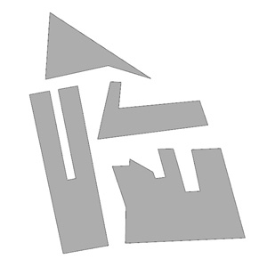
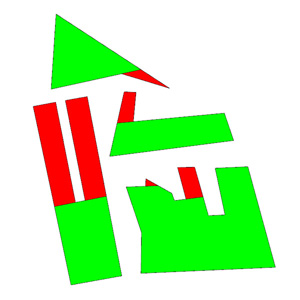

convexify operation
convexify
convexify(maxLength)
maxLength float Maximum length of the split line which splits concave polygons into subpolygons. If not provided, no limit is applied, i.e. all resulting polygons are convex.
This function splits a concave polygon into a number of convex polygons. If a maxLength parameter is provided, only split lines shorter than this value are applied and one of the resulting polygons might still be concave.
Related
Examples
attr maxLength = 1
Lot -->
convexify(maxLength)
comp(f){all: SubShapes}
SubShapes -->
case scope.sx >= maxLength && scope.sy >= maxLength :
color("#00ff00")
else:
color("#ff0000")

